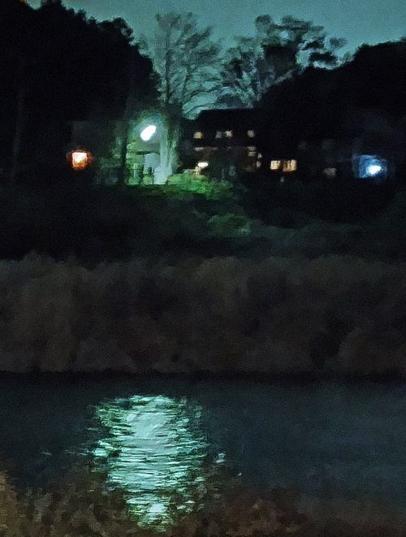

サマズイユ: 弦楽三重奏のための組曲
サマズイユという作曲家の名前には結構いろいろな所でお目にかかる。例えばラヴェルの友人だったことから、マルグリット・ロンのラヴェルの評伝にも出てきたりするけれども、その作品を聴いたことはなかった。録音も配信で見る限り数点しかないようだ。最初ピアノ曲集を聴いたのだが、薄味でそれほど惹かれなかった。次に出会ったのがこの"Avant l'Orage"「嵐（＝第二次世界大戦）の前」というタイトルの2枚組のアルバム。トマジ、クラ、グエ、フランセ、カサドシュ、ピエルネといったフランスの作曲家たちが主に戦間期に書いた弦楽三重奏曲が集められている。同時期から戦後に活躍したパスキエ三重奏団という存在があったからこそのアルバムともいえる。サマズイユについても、先に聴いたピアノ曲集に含まれていた『組曲』の作曲者自身の編曲によるトリオ版（パスキエ三重奏団に献呈）が入っている。演奏・録音共にとても良い。
Gustave Samazeuilh: Suite en trio
for Violin, Viola & Cello
Black Oak Ensemble
(2021)
古典形式による組曲で、全6曲いずれも宮廷舞曲を彷彿とさせる雅びな小品であるが、現代的な味付けも適度に施されている。甘く幸福な雰囲気が悪くない。サマズイユはこの組曲を気に入っていたのか（それとも人気があったのか）、トリオ以外に弦五部（cbは省略可）にも編曲している。『前奏曲』など、トリオ版では細部が変更され、より入念かつロマンティックに装飾されているように聴こえる。ちなみに、スコラ・カントルムにおける師であったダンディにも、若いころの小品で『古典様式による組曲』という管弦楽曲がある。またドビュッシーにメヌエット、パスピエといった古典舞曲を持つ有名な『ベルガマスク組曲』がある。サマズイユは若い頃ドビュッシーの知己を得て、「ドビュッシイスト」を自認していたくらいなので影響は受けていたかもしれないが、この曲の場合特段の類似性はないようだ。また、親しかったラヴェルの『クープランの墓』（こちらはサマズイユの『組曲』よりも後）との関連を想像するのも楽しい。とはいえ、曲自体の性格・内容は、ドビュッシーの場合と同様、全く同列に捉えられるものではなさそう。終曲（フォルラーヌ）は『クープランの墓』のフォルラーヌと同じ形式の舞曲とは思えないくらいのへだたりがある（ラヴェルが遅いテンポで幻想的であるのに対してサマズイユの方は明快な復古調）。また、ショーソンの『いくつかの舞曲』（これも古典舞曲集）の個性的なフォルラーヌと比べるのも一興かもしれない。

(Apr. 29, 2023)